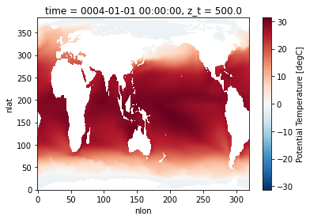

Posted in 2021
Intake-ESM Tutorial
- 02 December 2021
The Project Pythia Python Tutorial Seminar Series continues with the Intake-ESM Tutorial on Wednesday, December 8 at 1 PM Mountain Standard Time. This session will be led by Max Grover.
The content for this tutorial is hosted in the .ipynb notebook file(s) within the tutorial directory of this repository.
ESDS Update November 2021
- 02 December 2021
November was an active month! There were a couple of ESDS Forum talks, a variety of answered Python questions during office hours, and a Python tutorial!
Check out the following ESDS update for the month of November 2021.

Correctly Calculating Annual Averages with Xarray
- 19 November 2021
A common component of people’s workflows is calculating annual averages, which helps reduce the frequency of datasets, making them easier to work with. Two of the data frequencies you may be looking to convert to annual include:
Daily (365 days in each year)

Processing Data from the NCAR Mesa Lab Weather Station
- 12 November 2021
There is a weather station located at the Mesa Lab, situated along the Foothills of the Rockies in Boulder, Colorado!
By the end of this post, you will be able to plot an interactive visualization of the weather data collected at the Mesa Lab, as shown below!

Object Oriented Programming Tutorial
- 08 November 2021
The NCAR/UCAR virtual Python Tutorial Seminar Series continues with a lesson on Object Oriented Programming on November 10th at 1 PM Mountain Standard Time led by Dr. Kevin Paul.
The content for this seminar tutorial is hosted on Kevin’s Object Oriented Programming Tutorial Repository.
ESDS Update October 2021
- 28 October 2021
October has been an active month! There were a variety of talks, a variety of answered Python questions during office hours, and a Python tutorial!
Check out the following ESDS update for the month of October 2021.

Advanced Plotting Tutorial
- 25 October 2021
The NCAR/UCAR virtual Python Tutorial Seminar Series continues with Advanced Plotting Techniques on Wednesday, October 27th at 1 PM Mountain. This session will be led by Anissa Zacharias.
The content for this tutorial is hosted on Anissa’s matplotlib-tutorial GitHub repository (the same repository as her previous plotting tutorials).
Using Intake-ESM's New Derived Variable Functionality
- 22 October 2021
Last week, Anderson Banihirwe added a new feature to intake-esm, enabling users to add “derived variables” to catalogs! This is an exciting addition, and although this has not been included in a release yet, you are welcome to test out the functionality!
Keep in mind that this is an initial prototype and the API is likely to change.
Reading WRF data into Xarray and Visualizing the Output using hvPlot
- 15 October 2021
The typical data workflow within the Python ecosystem when working with Weather Research and Forecasting (WRF) data is to use the wrf-python package! Traditionally, it can be difficult to utilize the xarray data model with WRF data, due to a few challenges:
WRF data not being CF-compliant (which makes it hard for xarray to properly construct the dataset out of the box using xr.open_dataset)

CESM2-Large Ensemble Reproduction of a Figure from Kay et al. 2015 Using Intake-ESM and hvPlot
- 08 October 2021
This Jupyter Notebook demonstrates how one might use the NCAR Community Earth System Model v2 (CESM2) Large Ensemble (CESM2-LE) data hosted on AWS S3. The notebook shows how to reproduce figure 2 from the Kay et al. (2015) paper describing the CESM LENS dataset (doi:10.1175/BAMS-D-13-00255.1), with the LENS2 dataset.
There was a previous notebook which explored this use case, put together by Joe Hamman and Anderson Banihirwe, accessible on the Pangeo Gallery using this link. The specific figure we are replicating is shown below.

ESDS Progress Over the Past Few Months
- 01 October 2021
The first ESDS “meeting” took place in mid March 2021, with the kickoff event being the CGD town hall (here is the blog post detailing the topics at that meeting). Since that meeting, we have moved forward, holding a variety of Work in Progress talks, partnering with Xdev to offer Python Tutorials, and publish a series of blog posts aimed at documenting scientific workflows here at NCAR.
Most of our blog posts thus far have been focused on Python tutorials, workflow examples, or conference summaries. One new type of post we will be posting now are monthly summaries on ESDS activities. Since we have not posted one yet, we grouped up all of our activities since early March. Going forward, we will post on a monthly basis!

Reimagining Diagnostics Through the Use of the Jupyter Ecosystem
- 24 September 2021
Typically, diagnostics packages are written with following structure, using script-based workflows
Read files and do some preprocessing

Benchmarking Performance of History vs. Timeseries Files
- 17 September 2021
In this example, we will look at how long reading data from the Community Earth System Model (CESM), applying calculations, and visualizing the output takes using the following packages:
Regridding High Resolution Observations to a High Resolution Model Grid
- 10 September 2021
In this example, we will cover how to leverage a useful package from the Pangeo Ecosystem, xESMF. One important note when using this package, is make sure you are using the most up-to-date documentation/version, a few years ago, development moved to the pangeo-data branch of the package, installable using the following:
For this example, we will download a file from the World Ocean Atlas, which includes a variety of ocean observations assembled from the World Ocean Database.

GeoCAT-Comp Tutorial
- 03 September 2021
The NCAR/UCAR virtual Python Tutorial Seminar Series continues highlighting the functionality developed by NCAR’s GeoCAT team with GeoCAT-comp on September 8th at 1 PM Mountain Daylight Time led by Alea Kootz.
The content for the GeoCAT-Viz tutorial is hosted on Alea’s GeoCAT-Comp Tutorial Repository.
Comparing Atmospheric Model Output with Observations Using Intake-ESM
- 27 August 2021
Comparing models and observations is a critical component of climate diagnostic packages. This process can be challenging though - given the number of observational datasets to compare against, and the difference in spatiotemporal resolutions. In the previous iteration of the diagnostics package used for atmospheric data from the Community Earth System Model (CESM), they used pre-computed, observational datasets stored in a directory on the GLADE filesystem (/glade/p/cesm/amwg/amwg_diagnostics/obs_data)
Within this example, we walk though generating an intake-esm catalog from the observational data, reading in CESM data, and compare models and observations
Examining Diagnostics Using Intake-ESM and hvPlot
- 20 August 2021
In previous weeks, we have looked at building Intake-ESM catalogs from history files and visualizing CESM output using Holoviews and Datashader, but this week we are putting together a few of those pieces to visualize a comparison between model runs.
One of the first ESDS blog posts looked at building an interactive dashboard to look at plots, using high resolution ocean model output as the dataset. One of the limitations of that approach is that the images are static - we are pulling in pngs, and rending on the page, as opposed to more interactive options. In this example, we will read in data generated from ecgtools, from a directory only accessible via NCAR’s high performance computing center.
Plotting with GeoCAT Tutorial
- 19 August 2021
The NCAR/UCAR virtual Python Tutorial Seminar Series continues with two sessions highlighting the functionality developed by NCAR’s GeoCAT team: 1) Plotting with GeoCAT on Wednesday, August 25th led by Anissa Zacharias and 2) GeoCAT-comp September 8th at 1 PM Mountain Daylight Time led by Alea Kootz. More information on the GeoCAT-comp tutorial TBA.
The content for the Plotting with GeoCAT tutorial is hosted on Anissa’s Plotting with GeoCAT Tutorial Repository.
Plotting CESM Data on an Unstructured Grid using Geoviews and Datashader
- 13 August 2021
This week, during Xdev office hours, Steve Yeager raised a question regarding plotting unstructured grid data within Python. He was interested in plotting output from the Community Atmosphere Model, which supports unstructured grids, essentially a combination of triangles allowing for higher resolution in certain parts of the domain. This can be adventageous when wanting to achieve the benefits of high resolution within the primary domain, while maintaining the global scale of the model. This week, NCAR Science tweeted a great explanation of how revolutionary this capability is in the context of resolving processes over Greenland.
Unstructured grids can be difficult to plot directly within Python since they do not follow the typical lat, lon (x, y) convention. There is some preprocessing that needs to be applied before plotting.
Using Intake-ESM to Analyze Data from CESM2-LE
- 06 August 2021
In mid June, the CESM2 Large Ensemble dataset was made available to the public. This model was run in collaboration with the IBS Center for Climate Physics and the National Center for Atmospheric Research This dataset includes 100 ensemble members, at one degree spatial resolution, with each ensemble member including data from 1850 to 2100. If you are interested in learning more about how this ensemble was setup, be sure to check out the main webpage or read the pre-print of Rodgers et al. 2021 which describes this dataset in detail.
One of these challenges with this dataset is dealing with the massive amount of output. The data are available through the NCAR Climate Data Gateway and via the IBS OpenDAP Server. There is also a subset of the dataset available on the GLADE file system on NCAR HPC resources available within the directory /glade/campaign/cgd/cesm/CESM2-LE/timeseries/.

Project Pythia Portal Overview
- 30 July 2021
Last year, the Project Pythia team was formed to “provide a public, web-accessible training resource that will help educate current, and aspiring, earth scientists to more effectively use both the Scientific Python Ecosystem and Cloud Computing to make sense of huge volumes of numerical scientific data.”
The team is formally a collaboration between three main organizations, although contributors come from throughout the scientific Python community:

SciPy Conference 2021 Takeaways
- 26 July 2021
A couple weeks ago, I had an opportunity to (virtually) attend the Scientific Computing with Python (SciPy) Conference! The conference consisted of three primary sections:
Tutorials (Monday/Tuesday)
Dask Tutorial UPDATED DATES
- 23 July 2021
The NCAR/UCAR virtual Python Tutorial Seminar Series continues with a 2-part introduction to the Python package dask on Wednesday, July 28th and August 11th at 1 PM Mountain Daylight Time. These sessions will be led by Anderson Banihirwe.
Note: These dates have changed from the previous Dask Tutorial announcement.
Dask Tutorial
- 08 July 2021
The NCAR/UCAR virtual Python Tutorial Seminar Series continues with a 2-part introduction to the Python package dask on Wednesday, July 14th and August 11th at 1 PM Mountain Daylight Time. These sessions will be led by Anderson Banihirwe.
The content for this tutorial is hosted on Anderson’s Xarray Tutorial Github Repository. This is the same repository as the previous Xarray tutorials.
Scaling Python with Dask Class Takeaways
- 02 July 2021
This week, I had the opportunity to attend the Scaling Python with Dask class offered by Coiled. The class provided an overview of a variety of topics, including:
Parellelizing Python Code

Creating Model Documentation Using Jupyterbook and Intake-esm
- 25 June 2021
A common step to any project is documenting your data and your data workflow. Fortunately, open tools in the scientific python ecosystem make that much easier! In this example, we will cover creating your github repo, creating the catalog, visualizing the catalog, and generating a static webpage you can share with collaborators!
This week’s post is quite detailed, so just a warning! If you would like to look at the finished product, check out the following

CESM Diagnostics Discussion
- 17 June 2021
Every year, NCAR holds the Community Earth System Model (CESM) Workshop which brings together the CESM community to discuss relavant updates from the working groups as well as featured speakers and cross-working group discussions.
During the Software Engineering Working Group (SEWG) session, following a variety of talks, there was an open discussion regarding the current state of CESM diagnostics and future plans for collaboration.

Creating Visualizations of Intake-ESM Catalogs
- 11 June 2021
A common initial task when working with a new dataset is figuring out what data is available. This is especially true when working with climate ensembles with several components and time-frequency output (ex. Community Earth System Model Large Ensemble, CESM-LE). Here, we will examine different methods of investigating this catalog
Here, we will use intake-esm and graphviz, which can be installed using the following (including jupyterlab too!)

Xarray Tutorial
- 04 June 2021
The NCAR/UCAR virtual Python Tutorial Seminar Series continues with a 2-part introduction to the Python package xarray on Wednesday, June 9th and June 23rd at 1 PM Mountain Daylight Time. These sessions will be led by Anderson Banihirwe.
The content for this tutorial is hosted on Anderson’s Xarray Tutorial Github Repository. However, since final edits are being made to these notebooks we ask that you please wait until after 1 PM MDT on June 8 to download the materials (the Tuesday before the first session). This will ensure that you have the latest version of the notebooks.
Building an Intake-esm catalog from CESM2 History Files
- 04 June 2021
As mentioned in a couple of ESDS posts (intake-esm and Dask, debugging intake-esm), intake-esm can be a helpful tool to work with when dealing with model data, especially CESM. One of the requirements for using intake-esm is having a catalog which is comprised of two pieces:
A table of the relevant metadata (ex. file path, variable, stream, etc.)
Dask Distributed Summit 2021 Takeaways
- 28 May 2021
Cloud optimized datasets help improve speed of analysis
Entire 4 TB datasets open up in a few seconds
Pandas Tutorial
- 19 May 2021
The NCAR/UCAR virtual Python Tutorial Seminar Series continues with an introduction to the Python package pandas on Wednesday, May 26th at 1 PM Mountain. This session will be led by Drew Camron and Max Grover.
The content for this tutorial is hosted on Max’s NCAR Pandas Tutorial Github Repository
Debugging Intake-ESM Process for Reading in CMIP6
- 14 May 2021
This post was motivated by a post from Steve Yeager @sgyeager, who ran into an error when attempting to read in CMIP6 data via intake-esm.
For those who are unfamiliar with intake-esm, be sure to read over the documentation! The user guide even includes an entire portion of their site on looking at CMIP6 data. These resources would be a great place to start.
Git and GitHub Tutorial
- 07 May 2021
The NCAR/UCAR virtual Python Tutorial Seminar Series continues with an introduction to the Python package Git and GitHub on Wednesday, May 12th at 1 PM Mountain. This session will be led by Kevin Paul.
The purpose of this seminar is to cover just some of the common content needed to understand and use git and GitHub for collaboration on software. This is not meant to be an introduction to git or GitHub.
Paired Programming using VS Code
- 06 May 2021
A common task when developing notebooks or packages is collaborating with others. It can be challenging to do this when using JupyterHub since two people cannot access the same notebook at same time. One solution to this is to use Visual Studio Code (VS Code) to remotely access Casper/Cheyenne, use a virtual meeting plaform (Zoom, Google Meet), and interactively collaborate on development.
This process includes a few steps:
How to Use xarray.map_blocks for Vertical Interpolation of a 3D Field
- 28 April 2021
Within this example, we cover how to use xarray.map_blocks to calculate the mixed-layer depth within the CESM POP model output.
This calculation is “embarassingly parallel” such that each calculation is done within a single a column. The calculation should be easily computed within each column across the model domain. This is where map_blocks can be used to improve the performance of this metric.

Cartopy Tutorial
- 26 April 2021
The NCAR/UCAR virtual Python Tutorial Seminar Series continues with an introduction to the Python package cartopy on Wednesday, April 28th at 1 PM Mountain. This session will be led by Michaela Sizemore.
The content for this tutorial is hosted on Michaelsa’s Cartopy Tutorial Github Repository
Indexing unstructured grids with the Power of Xoak
- 23 April 2021
This week, there a post within the Zulip regarding how to deal with indexing CAM-SE data. The tricky part here is that is an unstructured grid, where there is only one column to the data, ncol.
Here is an example of the dataset we are working with. Notice that both lat and lon have the same dimension, ncol.
NCAR-Jobqueue
- 15 April 2021
Last week, we added posts detailing how to configure Dask using the new PBS scheduler on Casper. In this week’s example, we provide an example of the recent updates to ncar-jobqueue, added by Anderson Banihirwe, which allow users to easily configure dask on Casper without having to add many extra steps.
You must update the package to use the newest updates. You can update using conda!
Object Oriented Programming Tutorial
- 09 April 2021
The NCAR/UCAR virtual Python Tutorial Seminar Series continues with an introduction to Object Oriented Programming on Wednesday, April 14th at 1 PM Mountain. This session will be led by Austin Kootz.
The content for this tutorial is hosted on Austin’s oop_hrrr_tutorial GitHub repository.
An Example of Using Intake-ESM
- 09 April 2021
This past week, NCAR CISL updated the Casper Node to use PBS instead of Slurm for scheduling jobs. This led a post in which an example of spinning up dask clusters on the new configuration. This was also an opportunity to dig into dask, and try applying it to a sample task, specifically looking at ecosystem variables in the CESM-LE dataset, using notebooks included in Matt Long’s krill-cesm-le repository, modified by Kristen Krumhardt.
Here, we spin up our dask cluster. At first, running this notebook resulted in a killed worker error. After further expection, we noticed that additional resources would be needed to read in the notebook since the data are so large (on the order of ~1-2 TB). Increasing the individual worker to a higher amount (ex. 256 GB) solved the issue. Scale up to as many workers as you think are neccessary for the calculation (this may take some trial and error).
Using Dask on the New Casper PBS Scheduler
- 06 April 2021
Casper will complete a transition from Slurm to the PBS Pro workload manager on April 7, 2021. This has implications for how to spin up a Dask cluster, including via the NCAR Jupyterhub.
Below is an example script suitable for the new configuration using the PBSCluster function from dask_jobqueue. Note that the ncar_jobqueue package requires updating to work with the new configuration.
The Importance of Software Citation
- 02 April 2021
One of the questions that came up during the ESDS Town Hall was how do scientists/developers get credit toward their efforts in developing open-source code? Software that is used by the wider community should received the acknowledgment and recognition it deserves.
Data and academic publication citations have become popular in the literature, but often times, software is not cited… which can be arguably just as important to the work as the data.
Matplotlib Tutorial FAQ
- 30 March 2021
Here is a compilation of questions and issues that arose during the Matplotlib session of the Python Tutorial Seminar Series.
Q. Are all the colormaps perceptually ordered?
NCAR-CGD ESDS Town Hall
- 26 March 2021
Last week, there was a town hall focused on gathering input on the Earth System Data Science initiative at NCAR. The meeting began with an introduction about the initiative, the vision, goals, and how the team is planning to start working toward these goals.
The Question/Answer portion of the town hall was very informative and brought up some great topics for discussion. They have been collected from both the chat and Google Doc, sorted by category.
NumPy Tutorial FAQ
- 19 March 2021
Here is a compilation of questions and issues that arose during the Numpy session of the Python Tutorial Seminar Series.
The live video recording of this content can be found here.
Matplotlib Tutorial
- 19 March 2021
The NCAR/UCAR virtual Python Tutorial Seminar Series continues with an introduction to the Python package matplotlib on Wednesday, March 24th at 1 PM Mountain. This session will be led by Anissa Zacharias.
The content for this tutorial is hosted on Anissa’s matplotlib-tutorial GitHub repository. Primarily direct your attention to the matplotlib-tutorial.ipynb.
HiRes-CESM Interactive Dashboard Example
- 19 March 2021
In this example, our goal is to create an interactive dashboard, using images already output on a remote server.
We are specifically interested in looking at plots created using the HighRes-CESM-Analysis repository.
Jupyter Notebooks Tutorial FAQ
- 03 March 2021
Here is a compilation of questions and issues that arose during the Jupyter Notebooks session of the Python Tutorial Seminar Series.
Q. I installed Miniconda but it doesn’t seem to be working. conda is not a recognized command. What should I do?
Numpy Tutorial
- 26 February 2021
The NCAR/UCAR virtual Python Tutorial Seminar Series continues with an introduction to the Python package numpy on Wednesday, March 10th at 1 PM Mountain. This session will be led by Austin Kootz.
Check your conda install if this is the first tutorial in the series you are joining us for with conda --version and if necessary install by following these instructions
Your First Package Python Tutorial FAQ
- 19 February 2021
Here is a compilation of questions from the fourth and fifth sessions (“Your First Package”) of the Python Tutorial Seminar Series which covered refactoring code into seperate modules and packages, using an external built-in module (math), and how to publish your package
Q. Should we add __init__.py to .gitignore?
Python Tutorial Seminar Series - Spring 2021
- 16 February 2021
The “Your First” Python Tutorial Series is over, but the tutorial seminar series continues.
All events are at 1 PM Mountain